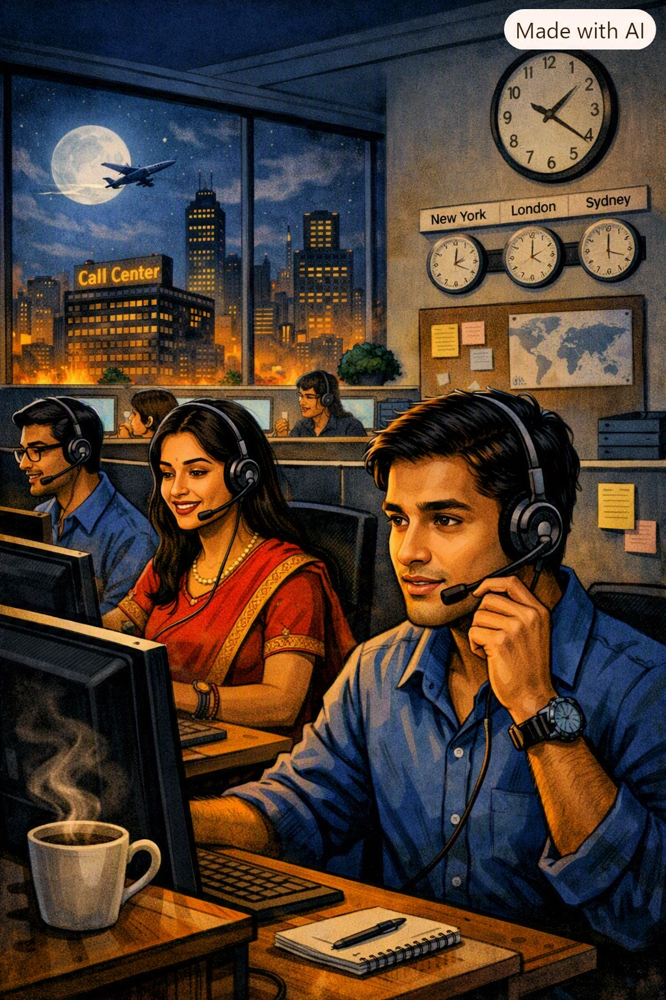
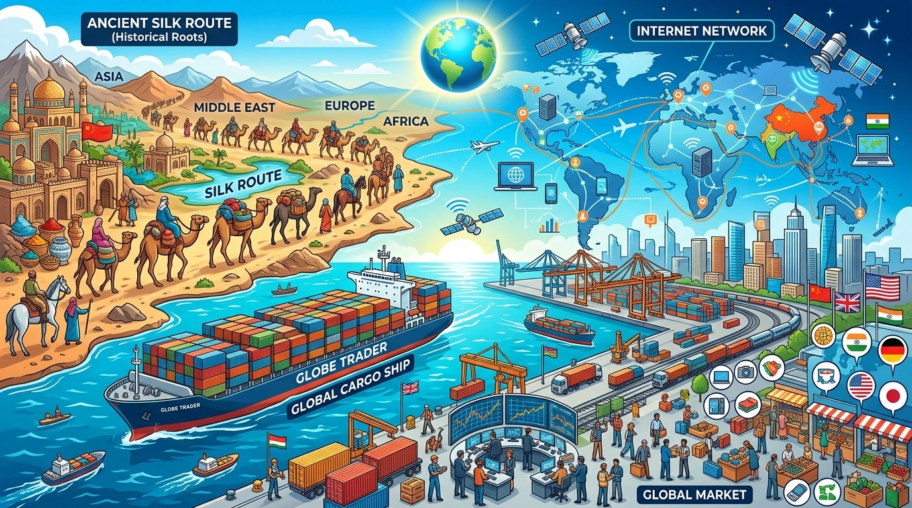

अध्याय 7: वैश्वीकरण - भाग 1 (परिचय, ऐतिहासिक पृष्ठभूमि एवं वैश्विक प्रवाह)
समकालीन विश्व-राजनीति का सबसे प्रभावशाली, जटिल और बहुचर्चित आयाम वैश्वीकरण (Globalization) है। यह एक ऐसी प्रक्रिया है जिसने भौगोलिक सीमाओं, राष्ट्रीय दूरियों और राजनीतिक दीवारों को समेटकर पूरी दुनिया को एक 'वैश्विक गाँव' (Global Village) में तब्दील कर दिया है।

1. वैश्वीकरण की अवधारणा: बहु-आयामी प्रक्रिया
वैश्वीकरण कोई एकांकी घटना या केवल आर्थिक लेनदेन नहीं है, बल्कि यह एक बहु-आयामी (Multi-dimensional) प्रक्रिया है। इसके मुख्य तीन आयाम हैं:
- 1. राजनीतिक आयाम (Political Dimension): राज्य की संप्रभुता, कल्याणकारी भूमिका और शासन क्षमता में परिवर्तन।
- 2. आर्थिक आयाम (Economic Dimension): अंतर्राष्ट्रीय व्यापार, निवेश, बहुराष्ट्रीय कंपनियों और पूंजी का प्रवाह।
- 3. सांस्कृतिक आयाम (Cultural Dimension): खान-पान, पहनावे, संगीत और जीवनशैली में वैश्विक समरूपता व सम्मिश्रण।
2. वैश्वीकरण को समझने के लिए तीन NCERT केस स्टडी (व्यावहारिक उदाहरण)
एनसीईआरटी पाठ्यपुस्तक में वैश्वीकरण के विभिन्न प्रभावों को स्पष्ट करने के लिए तीन जीवन-केस प्रस्तुत किए गए हैं:
- जनार्दन की कहानी (आउटसोर्सिंग व कॉल सेंटर सेवा): जनार्दन एक कॉल सेंटर में कार्य करता है। वह रात में अमेरिकी ग्राहकों को सेवा देने के लिए अपना नाम 'जॉन' रख लेता है और अमेरिकी लहजे में अंग्रेजी बोलता है। वह भारत में बैठकर हजारों मील दूर अमेरिका के उपभोक्ताओं की तकनीकी समस्याएं सुलझाता है। यह सेवाओं और अंतर्राष्ट्रीय श्रम के वैश्वीकरण का प्रत्यक्ष उदाहरण है।
- रामधारी की कहानी (वैश्विक वस्तुएं व बाजार एकीकरण): रामधारी अपनी बेटी के जन्मदिन पर एक साइकिल उपहार में देना चाहता है। वह बाजार में जाकर चीन में बनी साइकिल खरीदता है जो गुणवत्ता में अच्छी और भारतीय बाजार में काफी सस्ती दर पर उपलब्ध है। यह वस्तुओं और अंतर्राष्ट्रीय व्यापार के प्रवाह का उदाहरण है।
- बालिका की कहानी (सांस्कृतिक पसंद व वैश्वीकरण): एक नवयुवती स्कूली परीक्षा में अव्वल आने की खुशी में अपनी पारंपरिक पोशाक के बजाय जींस और टी-शर्ट पहनकर उत्सव मनाती है। यह सांस्कृतिक प्राथमिकताओं और पश्चिमी जीवनशैली के वैश्विक प्रभाव को दर्शाता है।

• कंप्यूटर स्क्रीन की रोशनी में ध्यानपूर्वक काम करते कर्मचारी
• दीवार पर विश्व‑घड़ी और टाइम‑ज़ोन चार्ट (न्यूयॉर्क, लंदन, सिडनी)
• खिड़की के बाहर जगमगाता शहर और आसमान में उड़ता विमान
यह दृश्य वैश्वीकरण और आउटसोर्सिंग के युग में भारत की नई भूमिका को दर्शाता है — जहाँ भारतीय युवा विश्व सेवा व्यापार का अहम हिस्सा बन चुके हैं।
3. वैश्वीकरण का मूल अर्थ और 'विश्वसनीय प्रवाह के चार रूप'
वैश्वीकरण की मूल आत्मा विश्वसनीय प्रवाह (Interconnected Flows) में निहित है। जब ये प्रवाह निरंतर और व्यापक पैमाने पर होते हैं, तो यह वैश्वीकरण का निर्माण करते हैं:
- 1. विचारों का प्रवाह (Flow of Ideas): इंटरनेट, सोशल मीडिया और संचार नेटवर्क के माध्यम से विचारों, सिद्धांतों और ज्ञान का दुनिया भर में त्वरित प्रसार।
- 2. पूंजी का प्रवाह (Flow of Capital): अंतर्राष्ट्रीय निवेशकों, बैंकों और शेयर बाजारों के जरिए पैसे और निवेश (FDI & FII) का एक देश से दूसरे देश में हस्तांतरण।
- 3. वस्तुओं का प्रवाह (Flow of Goods): विभिन्न देशों में बनी निर्मित वस्तुओं और कच्चे माल का अंतर्राष्ट्रीय सीमाओं के पार व्यापार।
- 4. लोगों का प्रवाह (Flow of People): बेहतर आजीविका, रोजगार, शिक्षा और सुरक्षा की तलाश में व्यक्तियों का एक देश से दूसरे देश में आव्रजन (Migration)।

4. वैश्वीकरण की ऐतिहासिक पृष्ठभूमि (Historical Roots)
वैश्वीकरण कोई 21वीं सदी की अचानक उत्पन्न हुई परिघटना नहीं है:
- प्राचीन व मध्यकालीन रेशम मार्ग (Silk Route): प्राचीन काल में एशिया, यूरोप और अफ्रीका के बीच मसालों, रेशम और विचारों का व्यापार होता था।
- औपनिवेशिक काल: ब्रिटेन ने भारत से कच्चा माल (कपास, नील) इंग्लैंड भेजा और वहाँ से बने कपड़ों को भारतीय बाजारों में बेचा।
- समकालीन वैश्वीकरण की विशिष्टता: आज का वैश्वीकरण अतीत से अलग इसलिए है क्योंकि इसमें प्रवाह की गति (Speed) और व्यापकता (Scale) अभूतपूर्व है।

1. विचारों का प्रवाह: ज्ञान, तकनीकी जानकारी और डेटा का वैश्विक प्रसार।
2. पूंजी का प्रवाह: अंतर्राष्ट्रीय बैंकों, निवेशकों और शेयर बाजारों द्वारा विदेशी प्रत्यक्ष निवेश (FDI)।
3. वस्तुओं का प्रवाह: विभिन्न देशों में निर्मित उत्पादों का अंतर्राष्ट्रीय सीमाओं के पार व्यापार।
4. जन-समूह का प्रवाह: आजीविका, उच्च शिक्षा और अवसरों के लिए अंतर्राष्ट्रीय प्रवास।

5. वैश्वीकरण के मुख्य प्रेरक कारण (Causes of Globalization)
वैश्वीकरण के विस्तार के पीछे निम्नलिखित निर्णायक कारक जिम्मेदार हैं:
- प्रौद्योगिकी और संचार क्रांति: टेलीग्राफ, टेलीफोन, माइक्रोचिप, कंप्यूटर और इंटरनेट के आविष्कार ने दूरियों को अर्थहीन कर दिया।
- विश्वव्यापी पारस्परिक जुड़ाव (Interconnectedness): एक देश में घटने वाली घटना (जैसे महामारी या आर्थिक मंदी) का प्रभाव तुरंत दुनिया के दूसरे हिस्से में महसूस किया जाता है।
- परिवहन क्रांति: बड़े मालवाहक जहाजों (Container Ships) और जेट उड़ानों ने माल ढुलाई की समय सीमा और लागत को न्यूनतम कर दिया।

अध्याय 7: वैश्वीकरण - भाग 2 (वैश्वीकरण के राजनीतिक प्रभाव)
वैश्वीकरण का प्रभाव केवल अर्थव्यवस्था तक सीमित नहीं है, बल्कि इसने राष्ट्र-राज्यों की राजनीतिक व्यवस्था, सरकार के कार्यों और राज्य की संप्रभुता को गहराई से प्रभावित किया है।

• कल्याणकारी राज्य का पीछे हटना: स्वास्थ्य, शिक्षा और सामाजिक सुरक्षा की जिम्मेदारियों से राज्य का हटना और 'न्यूनतम हस्तक्षेपकारी राज्य' (Minimalist State) का बनना।
• तकनीक द्वारा राज्य की क्षमता में वृद्धि: आधुनिक सूचना तकनीक, बायोमेट्रिक डेटा (जैसे आधार) और डिजिटल निगरानी के माध्यम से सरकारों की नागरिक प्रशासन और राष्ट्रीय सुरक्षा क्षमता का अधिक शक्तिशाली होना।
1. कल्याणकारी राज्य का ह्रास और 'न्यूनतम हस्तक्षेपकारी राज्य'
वैश्वीकरण के कारण राज्य की अवधारणा में निम्नलिखित मुख्य राजनीतिक बदलाव आए हैं:
- कल्याणकारी राज्य का पीछे हटना: पहले राज्य का मुख्य काम अपने नागरिकों के स्वास्थ्य, शिक्षा और सामाजिक सुरक्षा की जिम्मेदारी उठाना (Welfare State) था। वैश्वीकरण के दौर में अब राज्य कल्याणकारी कार्यों से पीछे हट रहा है।
- न्यूनतम हस्तक्षेपकारी राज्य (Minimalist State): अब राज्य की भूमिका केवल कानून-व्यवस्था बनाए रखने और आंतरिक व बाह्य सुरक्षा प्रदान करने तक सीमित होती जा रही है।
- बाजार की शक्तियों का वर्चस्व: आर्थिक और सामाजिक प्राथमिकताओं का निर्धारण अब राज्य की बजाय 'बाजार की शक्तियां' (Market Forces) करती हैं।

2. क्या राज्य की संप्रभुता समाप्त हो गई है? (दूसरा दृष्टिकोण)
वैश्वीकरण के आलोचकों का मानना है कि राज्य कमजोर हुआ है, लेकिन एनसीईआरटी पाठ्यपुस्तक के अनुसार वैश्वीकरण के कारण राज्य समाप्त नहीं हुआ है बल्कि उसकी कार्यप्रणाली में बदलाव आया है:
अध्याय 7: वैश्वीकरण - भाग 3 (वैश्वीकरण के आर्थिक प्रभाव)
वैश्वीकरण का सबसे गहन और सीधा असर आर्थिक क्षेत्र में देखा गया है। आर्थिक वैश्वीकरण के तहत अंतर्राष्ट्रीय व्यापार, निवेश और पूंजी प्रवाह के रास्ते में आने वाली बाधाओं को समाप्त किया गया है।

1. आर्थिक वैश्वीकरण के मुख्य आयाम
आर्थिक वैश्वीकरण में अंतर्राष्ट्रीय वित्तीय संस्थाओं जैसे अंतर्राष्ट्रीय मुद्रा कोष (IMF), विश्व बैंक (World Bank) और विश्व व्यापार संगठन (WTO) की केंद्रीय भूमिका रही है:
- आयात-निर्यात प्रतिबंधों में ढील: विभिन्न देशों ने अपने यहाँ आने वाले विदेशी माल (आयात) पर लगने वाले टैरिफ और सीमाओं को समाप्त या बहुत कम कर दिया।
- पूंजी की मुक्त आवाजाही: अमीर देशों के निवेशक अब विकासशील देशों में सीधे शेयर या विनिर्माण खदानों में पैसा (FDI) लगा सकते हैं।
- विषमता (अपेक्षाकृत सीमित श्रम प्रवाह): जबकि पूंजी और वस्तुओं का प्रवाह बहुत तेजी से बढ़ा है, विकसित देशों ने वीजा और आव्रजन नियमों को कड़ा करके गरीब देशों के श्रमिकों और मजदूरों (Labor Flow) की आवाजाही को रोक रखा है।

2. आर्थिक वैश्वीकरण: सामाजिक सुरक्षा कवच की आवश्यकता
आर्थिक वैश्वीकरण के कारण समाज दो वर्गों में विभाजित हुआ है—एक वर्ग को अत्यधिक लाभ हुआ (विजेता) जबकि दूसरा वर्ग हाशिए पर धकेला गया (पराजित):
अध्याय 7: वैश्वीकरण - भाग 4 (वैश्वीकरण के सांस्कृतिक प्रभाव)
वैश्वीकरण का प्रभाव हमारे खान-पान, पहनावे, भाषा, संगीत और सोचने के तरीके पर गहराई से पड़ता है। इसे सांस्कृतिक वैश्वीकरण (Cultural Globalization) कहा जाता है।

1. सांस्कृतिक समरूपता और 'मैकडोनाल्डीकरण' (McDonaldization)
सांस्कृतिक वैश्वीकरण का एक पहलू दुनिया में एक सर्वसामान्य विश्व-संस्कृति के उभरने का है:
- सांस्कृतिक समरूपता (Cultural Homogenization): पूरी दुनिया में एक जैसी संस्कृति का कायम होना। इसमें दुनिया भर के समाजों में अमेरिकी और पश्चिमी मूल्यों, खान-पान और पहनावे का बोलबाला हो जाता है।
- मैकडोनाल्डीकरण (McDonaldization): अमेरिकी फास्ट फूड संस्कृति (बर्गर, कोका-कोला) का विश्व भर में फैलना, जिससे स्थानीय खान-पान की विविधता खत्म होने का खतरा पैदा होता है।
- सांस्कृतिक प्रभुत्व का खतरा: यह केवल खान-पान तक सीमित नहीं है, बल्कि यह लोगों के सोचने के तरीके और जीवन-मूल्यों को बदल देता है।

2. सांस्कृतिक वैषम्यीकरण (Cultural Heterogenization - सकारात्मक पक्ष)
एनसीईआरटी पाठ्यपुस्तक के अनुसार सांस्कृतिक वैश्वीकरण केवल एकतरफा पश्चिमीकरण नहीं है, इसका एक दूसरा पहलू भी है:
अध्याय 7: वैश्वीकरण - भाग 5 (भारत और वैश्वीकरण एवं वैश्वीकरण का प्रतिरोध)
वैश्वीकरण का भारत पर गहरा प्रभाव पड़ा है। भारत औपनिवेशिक काल से ही वैश्विक अर्थव्यवस्था का हिस्सा रहा है, लेकिन 1991 के वित्तीय संकट के बाद भारत ने अपनी आर्थिक नीतियों में बुनियादी बदलाव किया।
• कंप्यूटर स्क्रीन की रोशनी में ध्यानपूर्वक काम करते कर्मचारी
• दीवार पर विश्व‑घड़ी और टाइम‑ज़ोन चार्ट (न्यूयॉर्क, लंदन, सिडनी)
• खिड़की के बाहर जगमगाता शहर और आसमान में उड़ता विमान
यह दृश्य वैश्वीकरण और आउटसोर्सिंग के युग में भारत की नई भूमिका को दर्शाता है — जहाँ भारतीय युवा विश्व सेवा व्यापार का अहम हिस्सा बन चुके हैं।
1. भारत में 1991 के नई आर्थिक नीति (LPG Reforms)
1991 में भारत में उत्पन्न गंभीर वित्तीय संकट और विदेशी मुद्रा भंडार की कमी के कारण भारत सरकार ने नई आर्थिक नीति (New Economic Policy 1991) अपनाई:
- उदारीकरण (Liberalisation): व्यापार, लाइसेंसिंग और उद्योगों पर लगे सरकारी कड़े नियंत्रणों और लालफीताशाही को समाप्त किया गया।
- निजीकरण (Privatisation): सार्वजनिक क्षेत्र (सरकारी उपक्रमों) के शेयरों को निजी निवेशकों और बहुराष्ट्रीय कंपनियों के लिए खोला गया।
- वैश्वीकरण (Globalisation): भारतीय अर्थव्यवस्था को विश्व अर्थव्यवस्था से जोड़ा गया और विदेशी प्रत्यक्ष निवेश (FDI) की अनुमति दी गई।
2. वैश्वीकरण का विरोध: वामपंथी और दक्षिणपंथी समालोचना
वैश्वीकरण का विरोध दुनिया भर में दो अलग-अलग राजनीतिक विचारधाराओं द्वारा किया जाता है:
- वामपंथी समालोचना (Leftist Critique): वामपंथियों का मानना है कि वैश्वीकरण पूँजीवाद का एक नया रूप है जो धनवानों को और अमीर तथा गरीबों को और गरीब बना रहा है। इससे राज्य कमजोर होता है और बहुराष्ट्रीय कंपनियां गरीबों का शोषण करती हैं।
- दक्षिणपंथी समालोचना (Rightist Critique): दक्षिणपंथियों की मुख्य चिंता सांस्कृतिक और राजनीतिक है। वे डरते हैं कि वैश्वीकरण से स्वदेशी संस्कृति, भाषा, पारंपरिक मूल्य और राष्ट्रीय संप्रभुता नष्ट हो जाएगी (जैसे वेलेंटाइन डे का विरोध या स्वदेशी उत्पादों पर जोर)।
3. वर्ल्ड सोशल फोरम (World Social Forum - WSF)
वैश्वीकरण और नव-उदारवादी पूंजीवाद के खिलाफ दुनिया भर के सामाजिक कार्यकर्ताओं, पर्यावरणविदों, ट्रेड यूनियनों और युवाओं का सबसे बड़ा साझा मंच वर्ल्ड सोशल फोरम (WSF) है:

- स्थापना व प्रथम बैठक (2001 Porto Alegre, Brazil): WSF की पहली बैठक वर्ष 2001 में पोर्टो एलेग्रे (ब्राजील) में आयोजित हुई।
- चौथी बैठक (2004 मुंबई, भारत): WSF की चौथी ऐतिहासिक बैठक 2004 में मुंबई (भारत) में हुई, जिसमें हजारों सामाजिक कार्यकर्ताओं ने भाग लिया।
- मूल नारा: "एक दूसरी दुनिया संभव है" (Another World is Possible)।

4. भारत में वैश्वीकरण का विरोध
भारत में वैश्वीकरण का विरोध कई मोर्चों पर हो रहा है:
- ट्रेड यूनियन और किसान आंदोलन: भारतीय किसान यूनियन (BKU) और वामपंथी मजदूर यूनियनों ने पेटेंट कानूनों, बहुराष्ट्रीय कंपनियों के बीज एकाधिकार और किसानों की आत्महत्या के मुद्दों पर विरोध जताया।
- स्वदेशी जागरण मंच: स्वदेशी उत्पादों के इस्तेमाल और विदेशी रिटेल बहुराष्ट्रीय कंपनियों (जैसे वालमार्ट, अमेजन) का विरोध।
- सांस्कृतिक विरोध: बहुराष्ट्रीय टीवी चैनलों, पश्चिमी पहनावे और पश्चिमी त्यौहारों के अत्यधिक प्रभाव के खिलाफ विरोध।